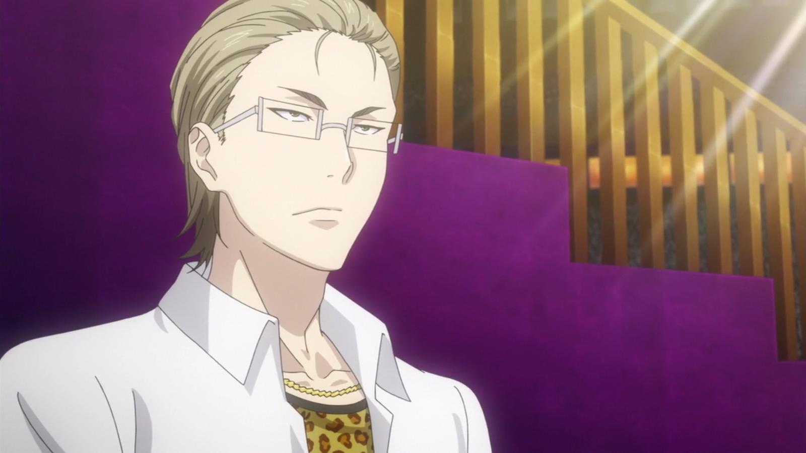

Etsuya Eizan
About Etsuya Eizan:
Etsuya Eizan is the current 8th seat in the Totsuki Council of 10.
He is nicknamed the Alchemist.
Etsuya Eizan is a 91st Totsuki Generation student.
Characteristics about Etsuya Eizan:
Eizan is described by Satoshi Isshiki to be a Yankee, having a large force of
delinquent boys behind him to do his dirty work.
He is a slick businessman, being a well known, but somewhat underground, business
consultant since his middle school days, charging a large monthly fee for his services.
He has had this mindset since middle school, having applied to Totsuki to make money.
While his methods and tactics to gather clients can be questionable, it is undeniable
that his charisma and presentation can instantly turn anyone, even a former business rival,
into a prospective client.
However, Eizan can be extremely cruel, heartless, and frequently employs dirty tactics to
prove a point, such as rigging the 43rd Annual Tōtsuki Autumn Election matchups to have one
of his enforcers, Subaru Mimasaka, challenge both Takumi Aldini and Sōma Yukihira in the tournament.